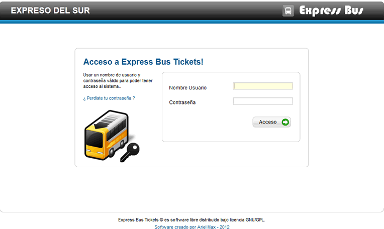
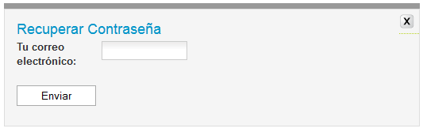

Ayuda Ingresando al Sistema
Contenido:
Vista General
Este es La primera ventana, la cual sera de habitual uso, este nos permite ingresar al sistema.
Para ingresar colocamos nuestros datos nuestro nombre de Usuario y la contraseña.
Recuperar Contraseña
si por alguna razón olvidaste tu contraseña puedes recuperarla haciendo clic en "Perdiste tu contraseña", se abrira una pequeña ventana que nos permitira generar una nueva contraseña, en el campo correo electrónico, escribimos nuestro email y Enviar.
Una vez enviado la nueva contraseña, ingresamos al sistema, y podemos cambiarla nuevamente entrando a la opción Editar mi perfil, es aconsejable cambiar la contrseña frecuentemente por seguridad.